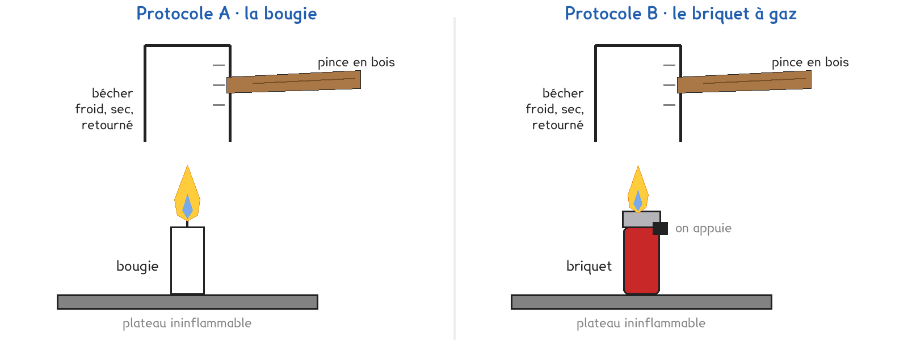

1re Bac Pro · toutes spécialités · TP commun CT-03
Qu'est-ce qu'une flamme rejette dans l'air de la pièce ?
1 figure
Sujet. Sur la table du salon, une bougie brûle depuis le début de la soirée. Sa flamme éclaire et chauffe, mais elle envoie aussi quelque chose dans l’air de la pièce, qu’on ne voit pas.
Problématique : qu’est-ce qu’une flamme rejette dans l’air de la pièce ?
Au laboratoire, deux flammes de la vie courante, étudiées avec les mêmes tests.

Un hydrocarbure est une molécule faite uniquement d’atomes de carbone C et d’hydrogène H.
a) Pour chaque combustible, entourer s’il s’agit d’un hydrocarbure.
| Combustible | paraffine (bougie) | butane (briquet) | éthanol (lampe à alcool) |
|---|---|---|---|
| Formule | environ C25H52 | C4H10 | C2H6O |
| Hydrocarbure | oui · non | oui · non | oui · non |
Le combustible brûle grâce au dioxygène O2 de l’air. Les produits de la combustion ne peuvent contenir que les atomes apportés par ces deux réactifs.
b) Compléter avec les symboles des atomes.
Le butane apporte les atomes ……… et ……… .
Le dioxygène apporte les atomes ……… .
Deux protocoles répondent à la même question. Une partie de la classe prend A, l’autre prend B, et on compare à la fin.
Protocole A · la bougie. Elle brûle de la paraffine. Sa flamme est stable : on a tout le temps de tenir le bécher au-dessus.
Protocole B · le briquet à gaz. Il brûle du butane. Sa flamme ne dure que tant qu’on appuie : on travaille par flammes courtes de dix secondes.
Les tests sont les mêmes. La buée sur un bécher froid révèle de l’eau. L’eau de chaux se trouble en présence de dioxyde de carbone. Le noir sur une soucoupe est du carbone, la suie.
c) Compléter le tableau pour comparer les deux protocoles.
| Protocole A | Protocole B | |
|---|---|---|
| Le combustible et sa formule | …………………………… | …………………………… |
| La durée de la flamme | longue · courte | longue · courte |
| Une difficulté du protocole | …………………………… | …………………………… |
On choisit avant de toucher au matériel ; le professeur peut imposer celui qui reste libre.
d) Quel protocole prenez-vous ? Justifier en une phrase.
Je prends le protocole ……… parce que ……………………………………………………………………
e) Hypothèse : entourer les produits que vous vous attendez à trouver.
eau · dioxyde de carbone · carbone · dioxygène · chlore
Avant de commencer
Cheveux attachés, manches serrées, lunettes sur le nez : l’eau de chaux irrite les yeux.
La flamme brûle sur le plateau ininflammable. Ni solvant ni papier sur la paillasse.
Le bécher et la soucoupe chauffent : on les tient à la pince en bois.
Le briquet ne reste jamais allumé plus de dix secondes : son capuchon brûle les doigts.
f) Dessiner le témoin et le bécher passé sur la flamme, après agitation.
Le schéma se dessine sur la feuille du TP.
Légender le dessin : le nom du liquide, son aspect dans chaque bécher.
g) Relever ce que montre chaque test, et le produit mis en évidence.
| Le test | Ce qu’on observe | Le produit mis en évidence |
|---|---|---|
| Le bécher froid retourné | …………………………………… | …………………… |
| L’eau de chaux, comparée au témoin | …………………………………… | …………………… |
| La soucoupe au sommet de la flamme | …………………………………… | …………………… |
La combustion complète du butane ne donne que du dioxyde de carbone et de l’eau.
h) Ajuster l’équation de la combustion complète du butane.
2 C4H10 + ……… O2 → ……… CO2 + ……… H2O
i) Donnée : 58 g de butane brûlé rejettent 176 g de CO2. Compléter.
| Masse de butane brûlée (g) | 58 | 1 | 190, une cartouche de camping |
|---|---|---|---|
| Masse de CO2 rejetée (g) | 176 | ………… | ………… |
j) Les produits observés confirment-ils l’hypothèse e ? À quoi a servi le témoin ?
k) Un groupe de l’autre protocole a-t-il trouvé les mêmes produits ?
La conclusion dépend-elle du combustible ? ……………………………………………………………
La suie signale une combustion incomplète. Elle s’accompagne d’un gaz invisible et sans odeur, le monoxyde de carbone CO, mortel à faible dose.
l) Pourquoi faut-il aérer une pièce où brûlent des bougies ? Deux raisons.
m) Répondre à la problématique en deux phrases.
Ce que ce TP a établi, et qui vaut pour tout hydrocarbure :
À RETENIR
Combustion complète : hydrocarbure + dioxygène → dioxyde de carbone + eau.
Combustion incomplète, flamme jaune qui noircit : il se forme aussi du carbone, la suie, et du monoxyde de carbone, un gaz mortel.
Le dioxyde de carbone est un gaz à effet de serre. Une combustion en rejette une masse plus grande que celle du combustible brûlé : l’oxygène vient de l’air.
Gazinière bien réglée : flamme bleue. Bougie : flamme jaune. Entourer sur chaque ligne.
Elle noircit le fond d’une casserole : bleue · jaune
Sa combustion est la plus complète : bleue · jaune
TP commun de physique-chimie, toutes spécialités. Le travail se fait sur la feuille du TP : cette page en est la version à l'écran, sans les lignes à remplir. Rien n'est enregistré.